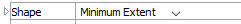
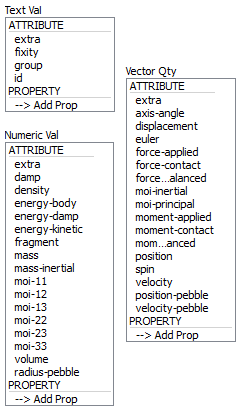
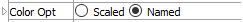
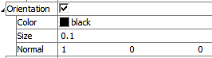
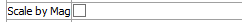
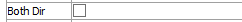

刚性簇
说明
刚性簇渲染为子颗粒、表面、箭头或范围，并按属性或特性着色。
此绘图项遵循形状/按…着色/颜色选项（Shape/Color By/Color Opt）模式来确定其渲染方式。
属性
形状

从“子颗粒”、“表面”、“箭头”、“最小范围”、“容差范围”或“单元范围”选项中选择用于渲染刚性簇数据的形状。此字段提供的控制项会随所选形状而变化。“子颗粒”提供通用的简单控制项（simple controls），“箭头”提供通用的箭头控制项（arrow controls），而“表面”和每个范围选项均提供通用的面片控制项（facet controls）。
“箭头”形状只能与 按…着色 属性中的“矢量量”项目一起使用。若 形状 设为“箭头”，则 按…着色 中的“文本值”和“数值”选择器将被禁用，并且 按…着色 的设置会自动切换到最近一次（或默认）的“矢量量”选择。
按…着色

指定要渲染该项目的哪一方面，从三个互斥分组中选择（同一时间每个分组中只有一项选择处于活动状态）：文本值、数值 和 矢量量。若选择了 矢量量，则会新增一个字段，用于指定渲染矢量的是某个分量（\(x\)、\(y\) 或 \(z\)）还是其大小（mag）。
在选择器底部选择 -->Add Prop 将弹出一个对话框，用户可在其中指定要添加到列表中的新特性（并使其成为活动的 按…着色 选择）。
选择器上的 ATTRIBUTE 和 PROPERTY 字样不起任何作用；提供它们只是为了在视觉上区分这两个分组。
| extra | 按 extra 变量着色，前提是该变量为字符串。额外提供一个字段，用于按索引标识该变量。 |
| 固定 | 按固定条件着色。该条件由分量标识符和固定状态组成的字符串表示。未施加任何固定的刚性簇以字符串 {二维中的 xTyTrR；三维中的 xTRyTRzTR} 表示，其中 T 表示平动，R 表示转动。若其中某个分量被固定，则 T 或 R 不出现。 |
| 分组 | 按分组着色。额外提供一个字段，用于指定槽位索引。默认设置为 任意（它占据微调框上的索引位置 0）。 |
| ID 标识 | 按对象 ID 着色。 |
| extra | 按 extra 变量着色，前提是该变量可转换为浮点值。额外提供一个字段，用于按索引标识该变量。 |
| damp | 按局部阻尼系数着色。 |
| density | 按密度着色。 |
| energy-body | 按体能量着色。 |
| energy-damp | 按局部阻尼能着色。 |
| energy-kinetic | 按动能着色。 |
| fragment | 按碎片索引着色。 |
| mass | 按质量着色。 |
| mass-inertial | 按惯性质量着色。 |
| moi-11 | 刚性簇真实转动惯量的 11 分量。（仅限三维） |
| moi-12 | 刚性簇真实转动惯量的 12 分量。（仅限三维） |
| moi-13 | 刚性簇真实转动惯量的 13 分量。（仅限三维） |
| moi-22 | 刚性簇真实转动惯量的 22 分量。（仅限三维） |
| moi-23 | 刚性簇真实转动惯量的 23 分量。（仅限三维） |
| moi-33 | 刚性簇真实转动惯量的 33 分量。（仅限三维） |
| moi-inertial | 按惯性转动惯量着色。 |
| moi-real | 按转动惯量着色。（仅限二维） |
| moment-applied | 按施加的弯矩着色。（仅限二维） |
| moment-contact | 按接触产生的弯矩着色。（仅限二维） |
| moment-unbalanced | 按不平衡弯矩着色。（仅限二维） |
| rotation | 按累积转角着色。（仅限二维） |
| spin | 按转动速度着色。（仅限二维） |
| volume | 按体积着色{假定二维中厚度为单位厚度}。 |
| radius-pebble | 按半径对子颗粒着色（若 形状 设为“表面”，则不可用）。 |
| extra | 按 extra 变量着色，前提是该变量为矢量。额外提供一个字段，用于按索引标识该变量。 |
| axis-angle | |
| displacement | 按累积位移着色。 |
| 欧拉角 | 按欧拉角着色。（仅限三维） |
| force-applied | 按施加的力着色。 |
| force-contact | 按接触产生的力着色。 |
| force-unbalanced | 按不平衡力着色。 |
| moi-inertial | 按惯性主转动惯量着色。（仅限三维） |
| 主惯性矩 | 按真实主转动惯量着色。（仅限三维） |
| moment-applied | 按施加的弯矩着色。（仅限三维） |
| moment-contact | 按接触产生的弯矩着色。（仅限三维） |
| moment-unbalanced | 按不平衡弯矩着色。（仅限三维） |
| position | 按位置着色。 |
| spin | 按转动速度着色。（仅限三维） |
| velocity | 按平动速度着色。 |
| position-pebble | 按子颗粒位置着色（若 形状 设为“表面”，则不可用）。 |
| velocity-pebble | 按子颗粒速度着色（若 形状 设为“表面”，则不可用）。 |
颜色选项

指定绘图项的着色选项。此项必须设为 scaled（等值线）着色，或基于 named 项目项的着色（例如分组名称）。详情请参见标准的 颜色选项（Color Opt） 控件。
方向

当已启用方向跟踪时（参见 设置方向跟踪（model orientation-tracking） 命令），可以在对象上绘制条纹以描绘其当前方向。勾选后，子属性可控制条纹的颜色、大小和初始方向。
方向：在绘图项上包含方向指示（勾选时）。
颜色：设置用于方向指示的颜色。
大小：设置方向指示的粗细。
法向：指定方向指示在未旋转方向上的平面。
注意：仅当 形状 属性设置为绘图项对象的一种表示形式时，此属性才可用（例如，若球体绘图项的 形状 设为“球体”）。
按大小缩放

勾选后，对象渲染将根据 按…着色 属性中所选 矢量量 的大小进行缩放。
注意：仅当 形状 属性设为 箭头 时，此属性才可用。
双向

勾选后，表示该对象的箭头两端都会渲染箭头头部。
注意：仅当 形状 属性设为 箭头 时，此属性才可用。
映射

根据所提供的设置变换绘图项的方向、位置或比例。例如，此属性允许将同一绘图项的多个不同可视化实例相邻渲染。
轴序：指定要使用的坐标变换，假定正常顺序为 {2D 中为 XY；3D 中为 XYZ}（例如，XZY 表示 Y 和 Z 坐标互换）。
平移：按指定的模型单位平移所渲染对象的 {2D 中为 \(x\) 和 \(y\)；3D 中为 \(x\)、\(y\) 和 \(z\)} 位置。
比例：将绘图项大小设为程序窗口大小的指定百分比。
透明度

设置绘图项的透明度。此设置不适用于二维模型对象。
透明度：为项目应用透明度（勾选时）。开启时，透明度设为默认值 70，并处于“锁定”状态。锁定时，可用的透明度范围被限制在 70（最低，略有透明）到 100（最高，完全不可见）。要访问完整的透明度取值范围（0-100），请按下锁形图标以“解锁”透明度范围；图标会随之改变（
）。
使用帮助按钮可获取有关此特定属性的帮助。
注意
应当提醒用户：低于 70 的值往往“更不透明”得难以察觉，并且可能导致深度透视看起来奇怪或不正确。
图例
设置该项在绘图图例中的显示。所有绘图项至少都具有 标题 属性。
图例：在图例中显示（勾选）有关该绘图项的所有信息。
标题：在图例中显示（勾选）该绘图项的标题。“别名：”字段可用于为该绘图项指定自定义标题。
大小：设置图例中文本的大小。
字体：设置文本所用的字体面。
样式：设置文本样式（选项为常规、粗体、斜体、粗斜体）。
颜色：设置文本颜色。
在 标题 下方，刚性簇 绘图项还在 图例 中提供用于 计数、命名 和 缩放 的控制项。
| 这些内容对您有帮助吗？… 版权与免责声明 |
FLAC3D © 2019, Itasca | 原文更新于 2020 年 10 月 8 日 |